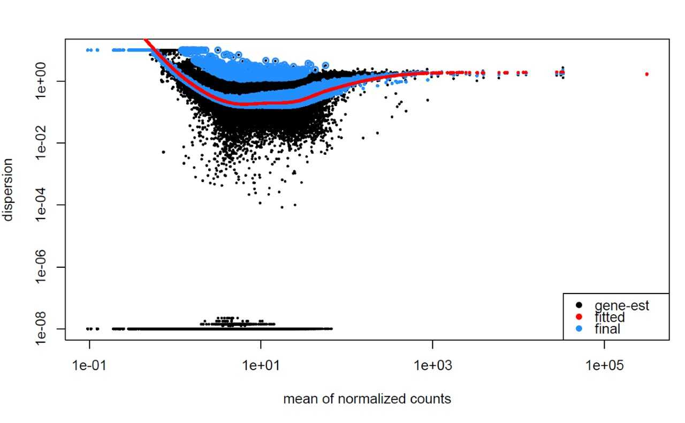

DESeq2
⏰ Time Estimation: 40 minutes
💬 Learning Objectives:
- Explain the different steps involved in running
DESeq() - Examine size factors and undertand the source of differences
- Inspect gene-level dispersion estimates
- Recognize the importance of dispersion during differential expression analysis
Gene-level differential expression analysis with DESeq2
Previously, we created the DESeq2 object using the appropriate design formula.
# DO NOT RUN
# Create dds object
dds <- DESeqDataSetFromTximport(txi,
colData = meta %>% column_to_rownames("sample"),
design = ~ condition)
# Filter genes with 0 counts
keep <- rowSums(counts(dds)) > 0
dds <- dds[keep,]Then, to run the actual differential expression analysis, we use a single call to the function DESeq().
## Run analysis
dds <- DESeq(dds)And with that we completed the entire workflow for the differential gene expression analysis with DESeq2! The DESeq() function performs a default analysis through the following steps:
- Estimation of size factors:
estimateSizeFactors() - Estimation of dispersion:
estimateDispersions() - Negative Binomial GLM fitting and Wald statistics:
nbinomWaldTest()

We will be taking a detailed look at each of these steps to better understand how DESeq2 is performing the statistical analysis and what metrics we should examine to explore the quality of our analysis.
Step 1: Estimate size factors
The first step in the differential expression analysis is to estimate the size factors, which is exactly what we already did to normalize the raw counts. 
DESeq2 will automatically estimate the size factors when performing the differential expression analysis. However, if you have already generated the size factors using estimateSizeFactors(), as we did earlier, then DESeq2 will use these values.
To normalize the count data, DESeq2 calculates size factors for each sample using the median of ratios method discussed previously in the count normalization lesson.
Vampirium DE analysis: examining the size factors
Let’s take a quick look at size factor values we have for each sample:
## Check the size factors
sizeFactors(dds)control_1 control_2 control_3 garlicum_2 garlicum_3 vampirium_1 vampirium_2
1.1149694 0.9606733 0.7492240 1.5633640 0.9359695 1.2262649 1.1405026
vampirium_3
0.6542030 These numbers should be identical to those we generated initially when we had run the function estimateSizeFactors(dds). Take a look at the total number of reads for each sample:
## Total number of raw counts per sample
colSums(counts(dds))We see that the larger size factors correspond to the samples with higher sequencing depth, which makes sense, because to generate our normalized counts we need to divide the counts by the size factors. This accounts for the differences in sequencing depth between samples.
Now take a look at the total depth after normalization using:
## Total number of normalized counts per sample
colSums(counts(dds, normalized=T))You might have expected the counts to be the exact same across the samples after normalization. However, DESeq2 also accounts for RNA composition during the normalization procedure. By using the median ratio value for the size factor, DESeq2 should not be biased to a large number of counts sucked up by a few DE genes; however, this may lead to the size factors being quite different than what would be anticipated just based on sequencing depth.
Step 2: Estimate gene-wise dispersion
The next step in the differential expression analysis is the estimation of gene-wise dispersions. Before we get into the details, we should have a good idea about what dispersion is referring to in DESeq2. 
In RNA-seq count data, we know:
- To determine differentially expressed genes, we need to identify genes that have significantly different mean expression between groups given the variation within the groups (between replicates).
- The variation within group (between replicates) needs to account for the fact that variance increases with the mean expression, as shown in the plot below (each black dot is a gene).

To accurately identify DE genes, DESeq2 needs to account for the relationship between the variance and mean. We don’t want all of our DE genes to be genes with low counts because the variance is lower for lowly expressed genes.
Instead of using variance as the measure of variation in the data (since variance correlates with gene expression level), DESeq2 uses a measure of variation called dispersion, which accounts for a gene’s variance and mean expression level. Dispersion is calculated by:
\(Var=\mu+\alpha*\mu^2\), where:
- \(\alpha\) = dispersion
- \(Var\) = variance
- \(\mu\) = mean
Which results in the following relationship:
| Effect on dispersion | |
|---|---|
| Variance increases | Dispersion increases |
| Mean expression increases | Dispersion decreases |
For genes with moderate to high count values, the square root of dispersion will be equal to the coefficient of variation. So 0.01 dispersion means 10% variation around the mean expected across biological replicates. The dispersion estimates for genes with the same mean will differ only based on their variance. Therefore, the dispersion estimates reflect the variance in gene expression for a given mean value. In the plot below, each black dot is a gene, and the dispersion is plotted against the mean expression (across within-group replicates) for each gene.

To accurately model sequencing counts, we need to generate accurate estimates of within-group variation (variation between replicates of the same sample group) for each gene. With only a few (3-6) replicates per group, the estimates of variation for each gene are often unreliable.
To address this problem, DESeq2 shares information across genes to generate more accurate estimates of variation based on the mean expression level of the gene using a method called ‘shrinkage’. DESeq2 assumes that genes with similar expression levels should have similar dispersion.
DESeq2 estimates the dispersion for each gene separately, based on the gene’s expression level (mean counts of within-group replicates) and variance.
Step 3: Fit and shrink gene-wise dispersion estimates
The next step in the workflow is to fit a curve to the gene-wise dispersion estimates and then shrink those estimates towards the curve. The idea behind fitting a curve to the data is that different genes will have different scales of biological variability, but, across all genes, there will be a distribution of reasonable estimates of dispersion.

This curve is displayed as a red line in the figure below, which plots the estimate for the expected dispersion value for genes of a given expression strength. Each black dot is a gene with an associated mean expression level and maximum likelihood estimation (MLE) of the dispersion (Step 1).
After we fit the curve to the estimates, we can shrink the gene-wise dispersion estimates toward the expected dispersion values. Thanks to the curve we can identify more accurately differentially expressed genes when sample sizes are small, and the strength of the shrinkage for each gene depends on:
- how close gene dispersions are from the curve
- sample size (more samples = less shrinkage)
This shrinkage method is particularly important to reduce false positives in the differential expression analysis. Genes with low dispersion estimates are shrunken towards the curve, and the more accurate, higher shrunken values are output for fitting of the model and differential expression testing. These shrunken estimates represent the within-group variation that is needed to determine whether the gene expression across groups is significantly different.
Dispersion estimates that are slightly above the curve are also shrunk toward the curve for better dispersion estimation; however, genes with extremely high dispersion values are not. This is due to the likelihood that the gene does not follow the modeling assumptions and has higher variability than others for biological or technical reasons [1]. Shrinking the values toward the curve could result in false positives, so these values are not shrunken. These genes are shown surrounded by blue circles below.

This is a good plot to evaluate whether your data is a good fit for the DESeq2 model. You expect your data to generally scatter around the curve, with the dispersion decreasing with increasing mean expression levels. If you see a cloud or different shapes, then you might want to explore your data more to see if you have contamination or outlier samples. Note how much shrinkage you get across the whole range of means in the plotDispEsts() plot for any experiment with low degrees of freedom.
Examples of worrisome dispersion plots are shown below:
The plot below shows a cloud of dispersion values, which do not generally follow the curve. This would suggest a bad fit of the data to the model.

The next plot shows the dispersion values initially decreasing, then increasing with larger expression values. The larger mean expression values should not have larger dispersions based on our expectations - we expect decreasing dispersions with increasing mean. This indicates that there is less variation for more highly expressed genes than expected. This also indicates that there could be an outlier sample or contamination present in our analysis.

Vampirium DE analysis: exploring the dispersion estimates and assessing model fit
Let’s take a look at the dispersion estimates for our Vampirium data:
## Plot dispersion estimates
plotDispEsts(dds)
We see a nice decrease in dispersion with increasing mean expression, which is good. We also see the dispersion estimates generally surround the curve, which is also expected. Overall, this plot looks good. We do see strong shrinkage, which is likely due to the fact that we have only two replicates for one of our sample groups. The more replicates we have, the less shrinkage is applied to the dispersion estimates, and the more DE genes are able to be identified. We would generally recommend having at least 4 biological replicates per condition for better estimation of variation.
Given the dispersion plot below, would you have any concerns regarding the fit of your data to the model?
- If not, what aspects of the plot makes you feel confident about your data?
- If so, what are your concerns? What would you do to address them?

This lesson was originally developed by members of the teaching team (Mary Piper, Meeta Mistry, Radhika Khetani) at the Harvard Chan Bioinformatics Core (HBC).
Some materials and hands-on activities were adapted from RNA-seq workflow on the Bioconductor website